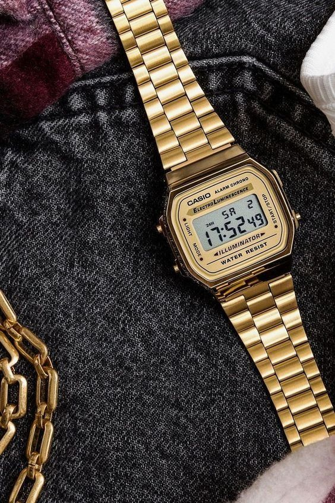
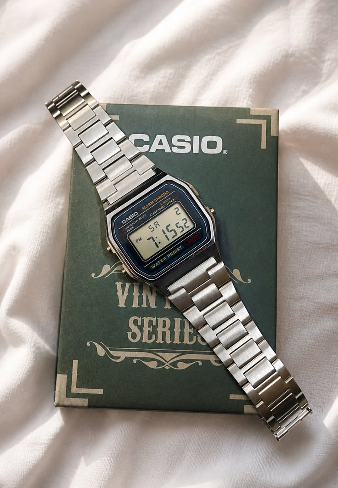
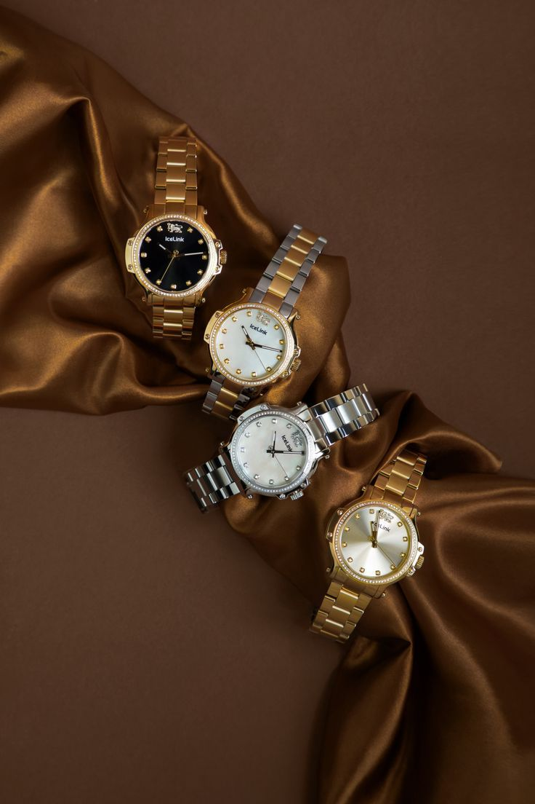
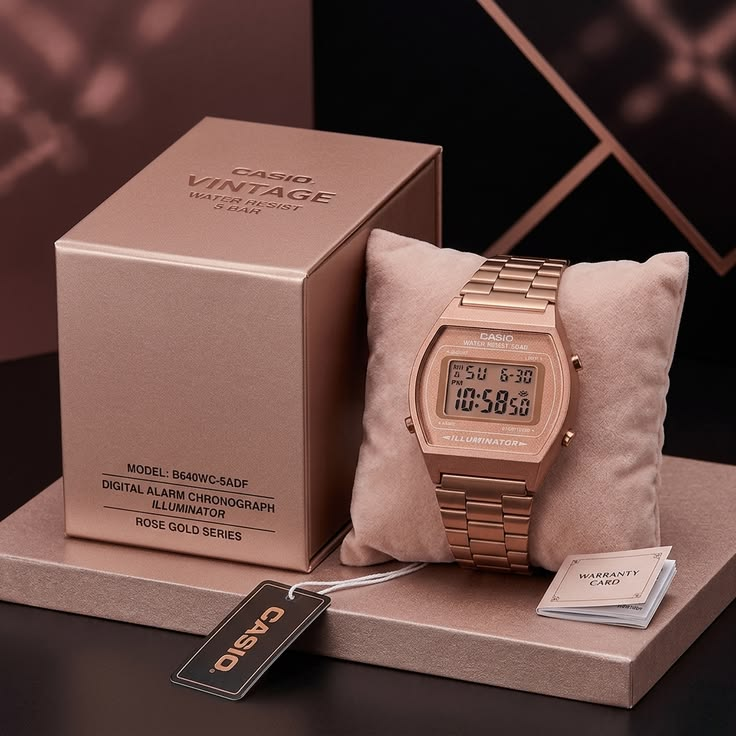

Product Gallery






Relive The Golden Era Of Digital Time
The iconic Casio Vintage Watch combines retro aesthetics, reliable performance, and timeless style for modern trendsetters.

Built to last with quality materials and reliable engineering.
Classic 80s and 90s inspired digital watch styling.
Handles everyday splashes and light water exposure.
Efficient battery performance for extended use.
Premium retro appeal at a budget-friendly price.
Easy visibility even in low-light environments.



Resin
Digital LCD
Stainless Steel
30m
Up to 7 Years
38.6 × 36.3 × 9.6 mm
49g
"Perfect blend of nostalgia and fashion."
"Amazing quality for the price."

"Looks premium and gets compliments everywhere."
Free Shipping • 1 Year Warranty
Typically 3–7 business days.
Yes, 1 year manufacturer warranty included.
Returns accepted within 30 days.
Adjustable strap fits most wrist sizes.